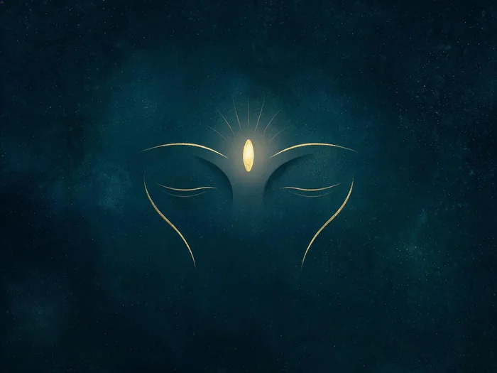
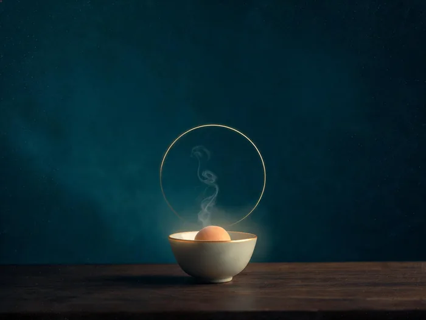

Содержание
Перед началом
Как выбрать практику
Четыре правила, которые снимают половину вопросов ещё до первой сессии.
С чего начать
Со сканирования тела или шаматхи: они прощают ошибки и не требуют образов. Десяти минут в день достаточно, чтобы понять, как ведёт себя внимание.
Как часто
Лучше коротко и регулярно, чем долго и раз в месяц. Три или четыре раза в неделю уже дают разницу, которую можно заметить.
Сколько ждать
Первые сдвиги обычно приходят через две-четыре недели: сначала становится легче замечать отвлечение, потом сама тишина.
Чего не ждать
Тишина не приходит по заказу. Практика это тренировка возвращения, а не экзамен на пустую голову, и отвлекаться на ней нормально.
О доказательствах
Как мы описываем эффекты
В описаниях мы разделяем три вещи: что говорит традиция, что человек чувствует на практике и что подтверждено исследованиями. Там, где данных мало, мы так и пишем, даже если практика красивая и старая.
Ни одна практика на этой странице не является лечением. Медитация может снижать уровень стресса, улучшать настроение и внимание, но при тревоге, депрессии, хронической боли и других состояниях она работает вместе с врачом и терапией, а не вместо них.
Классические практики
Традиции, в которых внимание и дыхание складываются в устойчивую форму.

01 / Даосизм, цигун
Микрокосмическая орбита
Замкнутый круг внимания: вверх по позвоночнику и вниз по передней линии тела.
Микрокосмическая орбита, по-китайски сяо чжоу тянь, это одна из базовых практик даосской внутренней алхимии, нэйдань. Внимание здесь движется по замкнутому контуру: вверх вдоль спины по Управляющему сосуду, ду-май, и вниз по передней стороне тела по Функциональному сосуду, жэнь-май. Два канала замыкаются в кольцо, отсюда и слово «орбита». Дыхание задаёт ритм этому движению, но не становится объектом контроля.
Традиция выводит практику из даосских текстов об алхимии: ранние упоминания круга восходят к «Чжоу и цань тун ци» (II век), а развёрнутое описание встречается у Чжан Бодуаня в «У чжэнь пьянь» (1075). В классическом варианте орбита была подготовительным этапом: прежде чем работать с тонкими состояниями, практик учился проводить внимание по телу без разрывов. На Запад практику принесли Чарльз Лук в книге 1970 года и Мантак Чиа в 1983 году, и в популярной версии она заметно упростилась.
Как это выглядит в зале или дома: прямая спина, расслабленные плечи, язык мягко касается нёба. Внимание собирают в точке ниже пупка, в нижнем даньтяне, и оттуда начинают круг. Обычно делают девять, восемнадцать или тридцать шесть кругов, а потом просто сидят в тишине. Ощущения на орбите чаще всего тёплые и смазанные: покалывание в спине, тяжесть в животе, прохлада на лице. Они не цель, а побочный эффект.
Как это работает
Механика здесь простая и вполне земная. Внимание привязано к длинному маршруту, поэтому уму труднее провалиться в случайную мысль: у него есть занятие. Дыхание при этом замедляется до пяти-шести циклов в минуту, а такое дыхание само по себе смещает баланс вегетативной нервной системы в сторону парасимпатики.
Отдельных клинических исследований именно микрокосмической орбиты нет. Работы о цигуне существуют, но качество их часто невысокое, а представления о ци и меридианах не имеют подтверждённой анатомической основы. Это не отменяет эффекта: расслабление, замедление дыхания и тренировка внимания работают независимо от того, как их объяснять. Но объяснение стоит держать в голове как язык традиции, а не как физиологию.
Как делать
- Сядьте удобно, спина прямая, руки на бёдрах или сложены под животом.
- Расслабьте плечи и челюсть, язык мягко положите к нёбу, сделайте три спокойных вдоха.
- Соберите внимание в точке на два-три сантиметра ниже пупка и постойте там несколько вдохов.
- На вдохе ведите внимание от промежности вверх по позвоночнику, через затылок, до макушки.
- На выдохе ведите его вниз по лицу, груди и животу, возвращаясь в исходную точку.
- Сделайте девять, восемнадцать или тридцать шесть кругов, затем посидите в тишине ещё минуту.
Признаки того, что получается
- На третьем-четвёртом круге маршрут держится сам, без внутренних напоминаний.
- Вдоль спины появляется ровное тепло или прохлада, а не отдельные вспышки.
- После практики тело ощущается собранным, а голова ясной, без вязкости.

02 / Буддизм тхеравады
Метта
Медитация любящей доброты: пожелание блага себе и другим, произносимое мысленно.
Метта, или медитация любящей доброты, пришла из буддийской традиции тхеравады. Она открывает четыре безмерных состояния, брахмавихары: метту, каруну (сострадание), мудиту (сорадость) и упеккху (равностность). В основе простой жест: вы мысленно желаете благополучия, начиная с себя и постепенно расширяя круг.
Самое раннее известное изложение практики это «Карания-метта-сутта» из «Сутта-нипаты» (Сн 1.8), короткий текст о том, как жить тому, кто хочет мира. Систематическое описание даёт «Висуддхимагга» Буддхагхоши, памятник V века: там метта разобрана по шагам, с порядком людей и с ошибками, в которые легко провалиться.
Порядок в традиции не случаен: сначала себя, потом близкого человека, потом нейтрального, потом того, с кем отношения сложные, и в конце всех существ. С себя начинают не из эгоизма, а потому что без тепла к себе пожелание другим быстро становится вежливой формулой. Сама формула короткая: пусть мне будет спокойно, пусть мне будет хорошо, пусть мне будет легко.
Как это работает
Работает здесь повторяемое намерение. Вы произносите короткую фразу, держите в уме конкретного человека и замечаете, что происходит в теле: тепло в груди, ком в горле, желание отвлечься. Тело часто отвечает раньше слов, и это самый надёжный признак, что практика идёт.
Метту исследовали больше, чем многие другие практики. В работе Фредриксон и коллег (2008, 139 человек, сравнение с листом ожидания) семь недель практики дали больше положительных эмоций, выше удовлетворённость жизнью и меньше симптомов депрессии. Метаанализ Зенга и коллег (2015) показывает эффекты от малых до средних при высокой неоднородности данных, а обзор Гояла и коллег (2014) считает доказательств для улучшения настроения недостаточно. Проще говоря: направление эффекта есть, размер его скромный и зависит от регулярности.
Как делать
- Сядьте или лягте удобно и сделайте несколько спокойных вдохов.
- Направьте пожелание себе: пусть мне будет спокойно, пусть мне будет хорошо.
- Вспомните близкого человека и пожелайте того же ему.
- Затем нейтрального человека, например соседа или прохожего.
- В конце того, с кем отношения сложные, насколько это получается без насилия над собой.
- Расширьте пожелание на всех людей и существ вокруг.
Признаки того, что получается
- Фраза перестаёт быть текстом и начинает отзываться в теле хотя бы на одном человеке.
- В течение дня вы замечаете раздражение раньше, чем успеваете на него ответить.
- Трудный человек вспоминается без мгновенного сжатия в груди.

03 / Буддизм, брахмавихары
Мудхита
Сорадость: радость за чужую удачу, которую можно тренировать так же, как внимание.
Мудхита это третье из четырёх безмерных состояний, сорадость. Это способность искренне радоваться, когда хорошо другому: его успеху, здоровью, спокойствию, маленькой удаче. Традиция считает её самой трудной из четырёх, потому что она встречается напрямую с завистью.
В «Висуддхимагге» у каждой брахмавихары указаны два врага. Дальний враг мудхиты это зависть, иссā. Ближний враг, тот, что маскируется под добродетель, это пахāса, показное веселье: человек изображает радость за другого, чтобы выглядеть хорошо. Различение этих двух состояний и есть половина практики.
Традиционный порядок тот же, что у метты: близкий человек, нейтральный, трудный, все существа. Но начинать легче не с людей, а с простых примеров: ребёнок, который научился ходить, чужая собака, нашедшая дом. Задача в том, чтобы дать радости случиться, а не сконструировать её из вежливости.
Как это работает
Мудхита меняет то, как ум оценивает событие. Успех другого обычно читается как угроза собственному положению. Сорадость предлагает другую рамку: хорошее, случившееся рядом, это хорошее вообще, и оно не обязано быть отнятым у вас.
Научных работ по мудхите почти нет: отдельные исследования и обзоры упоминают её в составе программ сострадания, но рандомизированных испытаний именно сорадости мы не нашли. Зато хорошо изучена соседняя территория: связь зависти с выгоранием и качеством отношений. Практику стоит держать как тренировку внимания и честности с собой, а не как метод лечения.
Как делать
- Вспомните человека, чья радость вам приятна, и мысленно скажите: мне радостно за тебя.
- Заметьте, где в теле отзывается эта радость: в груди, в животе, в лице.
- Позвольте чувству быть, не усиливая его.
- Расширьте пожелание: пусть хорошее приходит ко всем, кто мне дорог.
- Если появляется зависть, отметьте её спокойно и вернитесь к пожеланию.
Признаки того, что получается
- Вспомнить чужую удачу получается без внутреннего торга.
- Зависть замечается как зависть, а не как «объективная несправедливость».
- Радость за другого держится дольше нескольких секунд.

04 / Индийская традиция
Шаматха
Одно внимание, один объект и спокойное возвращение каждый раз, когда ум ушёл.
Шаматха, или успокоение ума, это практика однонаправленного внимания. Вы выбираете один объект, чаще всего дыхание, и учитесь возвращаться к нему каждый раз, когда ум уходит. Уход здесь не ошибка, а часть работы: именно возвращение тренирует устойчивость.
Классическую схему из девяти стадий связывают с «Шравакабхуми» Асанги (IV век) и с «Бхаванакрамой» Камалашилы (около 792-794), где путь внимания изображён со слоном и обезьяной: от полного блуждания до ровного пребывания. Девять стадий это карта, а не экзамен: большинство практикующих живёт между третьей и пятой.
Объектом может быть дыхание у носа, движение живота, пламя свечи, звук или образ. Дыхание удобнее всего: оно всегда с вами и не требует реквизита. От объекта зависит характер практики, но не её суть: держать, замечать уход, возвращаться.
Как это работает
Шаматха тренирует то, что в психологии называют устойчивым вниманием и тормозным контролем: способность держать цель и не реагировать на помеху. Повторение возвращений буквально прокладывает короткий путь к объекту, и со временем он срабатывает сам.
Исследования здесь осторожные. Трёхмесячный ретрит в работе Маклина и коллег (2010) улучшил устойчивое внимание, но выборка была небольшой. Обзоры показывают малые и неоднородные эффекты, а критический разбор Ван Дама и коллег (2018) напоминает, что часть громких результатов не воспроизводится. Практика всё равно полезна, но как тренировка, а не как таблетка.
Как делать
- Сядьте с прямой спиной, глаза можно прикрыть.
- Выберите точку опоры: ощущение воздуха у носа или движение живота.
- Держите внимание в одном месте, не контролируя дыхание.
- Когда заметили, что ум ушёл, мягко вернитесь, без упрёка.
- Считайте возвращения, а не минуты.
Признаки того, что получается
- Вы замечаете уход внимания за секунды, а не за минуты.
- Дыхание остаётся ровным, даже когда ум отвлекается: паника по этому поводу уходит.
- Двадцать минут проходят без внутреннего счёта времени.

05 / Буддизм тхеравады
Випассана
Наблюдение того, что происходит, без выбора и без оценки.
Випассана переводится как прозрение и означает видение вещей такими, какие они есть. Вместо одного объекта внимание свободно перемещается по телесным ощущениям: тепло, прохлада, покалывание, давление, вибрация. Всё, что появляется, отмечают и отпускают.
Корень практики это «Сатипаттхана-сутта» (МН 10), наставление о четырёх основаниях осознанности. В современном виде випассану разнесли десятидневные курсы: первый провёл С. Н. Гоенка в Мумбаи 3-13 июля 1969 года, продолжив линию У Ба Кхина. Формат жёсткий: десять дней молчания, долгие часы сидения, ранние подъёмы, запрет на чтение и письмо.
Домашняя версия мягче: короткие сессии, в которых вы наблюдаете, как ощущения появляются и исчезают. Смысл не в том, чтобы найти приятное состояние, а в том, чтобы увидеть непостоянство. То, что казалось монолитом, распадается на меняющиеся куски, и это меняет отношение к собственным реакциям.
Как это работает
Випассана тренирует то, что называют децентрированием: способность смотреть на переживание со стороны, не срастаясь с ним. Внимание к меняющимся телесным сигналам усиливает интероцепцию, а привычка отмечать и отпускать снижает вязкость эмоций.
Доказательная база здесь неровная. Обзор Кьезы (2010) нашёл около семи исследований випассаны, в основном низкого качества. Метаанализ Гояла и коллег (2014) говорит об умеренных эффектах при тревоге и депрессии, но там речь о светских программах MBSR и MBCT, а не о випассане как таковой. Отдельно стоит помнить о работе Линдаля и коллег (2017): у части практикующих бывают неприятные эффекты, и интенсивные ретриты небезопасны для всех.
Как делать
- Сядьте удобно и закройте глаза.
- Начните с ощущений в области живота и груди.
- Перемещайте внимание по телу, отмечая всё, что заметно.
- Не задерживайтесь на приятном и не отталкивайте неприятное.
- Замечайте момент, когда ощущение меняется или исчезает.
Признаки того, что получается
- Ощущение удаётся отметить до того, как оно превратилось в мысль.
- Неприятное переживание заканчивается, и вы это замечаете, а не проваливаетесь в него.
- Намерение отреагировать появляется, но не обязательно исполняется.
Тело, энергия и взгляд
Практики, где работа идёт с образом тела, дыханием и направлением глаз.

06 / Йогическая традиция
Медитация на раскрытие чакр
Семь центров, семь огней и медленное движение внимания снизу вверх.
Медитация на раскрытие чакр работает с образом: вдоль позвоночника представляют семь светящихся центров, от основания тела до макушки. Каждому традиция приписывает свой цвет, звук и качество. Здесь важен не точный оттенок, а сама практика внимания к телу и его состояниям.
Система чакр сложилась в индийской тантрической литературе. Развёрнутое описание шести центров даёт «Шат-чакра-нирупана» Пурнананды (1577), а на Запад её вывел Джон Вудрофф в книге «Змеиная сила» (1919). Привычные семь чакр с цветами радуги сложились уже в XX веке, в теософской и нью-эйджевской среде, и к средневековому тексту прямого отношения не имеют.
Обычно движение идёт снизу вверх: вы останавливаетесь на каждом центре, представляете мягкое свечение и наблюдаете, что происходит в теле. Если образ не появляется, достаточно просто направить внимание в эту область и почувствовать её. Чакры в этой практике остаются языком описания, а не анатомией.
Как это работает
Психологически здесь работают два механизма: направленное воображение и внимание к телу. Образ даёт уму опору, а последовательный проход по зонам не даёт вниманию расплываться. Похожий эффект даёт любая телесно-ориентированная визуализация, от сканирования тела до практик с теплом.
Стоит сказать прямо: чакры не описывают анатомические структуры, и воспроизводимых физиологических доказательств их существования нет. Исследований самой практики мало, выборки небольшие. Это не делает практику бессмысленной: она работает как упражнение на внимание и воображение, а традиционные объяснения остаются языком традиции.
Как делать
- Сядьте прямо, закройте глаза и сделайте несколько вдохов.
- Направьте внимание в основание тела и представьте тёплый свет.
- Медленно поднимайтесь к следующему центру на каждом выдохе.
- На каждом центре задержитесь на три или пять вдохов.
- Дойдите до макушки и представьте, что свет выходит за пределы тела.
- Вернитесь вниманием к дыханию и посидите в тишине.
Признаки того, что получается
- Образ держится на каждом центре по нескольку вдохов, не рассыпаясь.
- В областях появляется тепло, тяжесть или пульсация, разные в разных зонах.
- После прохода тело ощущается ровнее, а голова тише.

07 / Крийя-йога
Дыхание позвоночника
Вдох вверх по позвоночнику, выдох вниз, без напряжения и задержек.
Дыхание позвоночника это базовая практика крийя-йоги. Внимание движется вместе с дыханием по позвоночному столбу: на вдохе от основания вверх, к точке между бровями, на выдохе обратно вниз. Движение происходит скорее в воображении и в тонких ощущениях, чем в мышцах.
Линию передачи традиция ведёт от Лахири Махасайи к Шри Юктешвару и далее к Парамахансе Йогананде, который описал её в «Автобиографии йогина» (1946). Слово «крийя» здесь означает действие: дыхание и внимание совершают одну и ту же работу, и в этом весь смысл.
Это не дыхание животом и не задержки. Дыхание остаётся ровным и тихим. Практику часто делают перед основной медитацией, чтобы собрать внимание и разогреть тело: десять-пятнадцать циклов, потом короткая пауза и тишина.
Как это работает
Основной физиологический вклад здесь делает дыхание. Медленное дыхание около шести циклов в минуту усиливает вариабельность сердечного ритма и барорефлекторную чувствительность: это показано в работе Бернарди и коллег (2001) и подтверждено обзором Дзаккаро и коллег (2018) по парасимпатическим маркерам.
Отдельных испытаний дыхания позвоночника нет. То есть физиология медленного дыхания изучена, а конкретная крийя нет. Это честная рамка: эффект расслабления и собранности ожидаем, а более сильные обещания из традиции мы не подтверждаем.
Как делать
- Сядьте с прямой спиной, расслабьте плечи и челюсть.
- Положите внимание у основания позвоночника.
- На вдохе ведите его вверх, вдоль позвоночника, до межбровья.
- На выдохе ведите вниз, тем же путём, обратно.
- Дышите медленно, без задержек, десять или пятнадцать циклов.
Признаки того, что получается
- Дыхание само замедляется к пятому циклу, без команды.
- Внимание проходит путь целиком, не проваливаясь в мысли на середине.
- После практики спина держится ровно, а голова ясная.

08 / Хатха-йога
Шамбхави мудра
Мягкий взгляд в пространство перед собой и внимание в центре лба.
Шамбхави мудра, её также называют бхайрави мудра, это практика из хатха-йоги, связанная с аджна-чакрой. Глаза остаются открытыми, но взгляд не цепляется за предметы: он мягко расфокусирован и направлен в пространство перед собой, а внимание собрано в точке между бровями.
Классические описания есть в «Хатха-йога-прадипике» (4.35-37) и в «Гхеранда-самхите» (глава III). Там мудра описана как способ удержать взгляд и ум в одной точке, шаг к созерцанию. В современном мире её популяризировал Садхгуру под названием «Шамбхави махамудра»: это уже составная практика с дыханием и движениями, а не буквально классическая мудра.
Внешне это выглядит как спокойное созерцание. Внутри происходит тонкая работа: глаза расслаблены, ум не занят разбором увиденного, внимание удерживается в одной точке. Многие описывают состояние как ясное и тихое одновременно.
Как это работает
При расфокусированном взгляде зрительная система перестаёт сканировать детали, и вместе с этим затихает поток комментариев, который обычно за ними следует. Точка между бровями добавляет телесную опору: внимание держится не только глазами, но и ощущением в области лба.
Исследования мудры немногочисленны. Небольшие работы по программе Isha, где эта практика входит в состав «Шамбхави махамудры», сообщают о снижении стресса и улучшении сна (Петерсон и коллеги, 2017; Упадхьяй и коллеги, 2022), но выборки там маленькие, авторы часто связаны с организацией, независимых повторений нет. Мы приводим это как осторожную ссылку, а не как доказательство.
Как делать
- Сядьте удобно, спина прямая, подбородок чуть опущен.
- Не закрывая глаз, направьте взгляд вперёд и слегка вверх.
- Расфокусируйте взгляд, не сводя глаза к переносице.
- Соберите внимание в точке между бровями.
- Дышите спокойно. Если глаза устали, закройте их и отдохните.
Признаки того, что получается
- Взгляд держится расфокусированным минуту и больше без напряжения.
- Мысли идут тише, но видно остаётся всё.
- После практики глаза не болят и не слезятся.
Осознанность в повседневности
Практики без подушки и таймера: в движении, за столом, в обычном дне.

09 / Практики осознанности
Осознанность в движении
Ходьба, в которой важна не цель, а сам шаг.
Медитация в движении переносит внимание с подушки в обычную жизнь. Вариант из канона прост: вы идёте и знаете, что идёте. Самый доступный формат это медленная ходьба по прямой, когда важно не куда вы идёте, а как стопа встречает пол.
В «Сатипаттхана-сутте» (МН 10) осознанность в ходьбе упомянута как одно из положений тела: сидя, стоя, идя, лёжа. В дзен эта практика стала кинхин, ходьбой между сидениями, а в тайской лесной традиции медленную ходьбу отрабатывают отдельно, с точной скоростью и вниманием к ступне.
Домашняя версия не требует ничего: пять метров комнаты, коридор, дорожка в парке. Тот же принцип работает в любой деятельности: мытьё посуды, подъём по лестнице, дорога до метро. Достаточно выбрать одно действие и делать его чуть медленнее обычного, целиком оставаясь в нём.
Как это работает
Ходьба добавляет к вниманию ритм. Повторяющийся цикл шага стабилизирует состояние: недаром мы начинаем мерить комнату шагами, когда не можем усидеть. Медленный темп оставляет время заметить переходы: пятка, стопа, перенос веса.
Данные здесь в основном о прогулках, а не о медитации в ходьбе. Прогулка девяносто минут на природе снижала руминацию и активность субгенуальной префронтальной коры (Братман и коллеги, 2015, 38 человек). Метаанализ 2022 года показывает, что прогулки на природе связаны с меньшим уровнем депрессии и тревоги. Вклад собственно осознанности в этих работах не отделён, так что будем аккуратны в выводах.
Как делать
- Выберите ровный отрезок дороги длиной пять или десять метров.
- Идите медленнее обычного, без цели дойти.
- Замечайте по очереди: пятка, стопа, перенос веса.
- На повороте остановитесь, осознайте движение и идите обратно.
- В конце постойте минуту, чувствуя тело целиком.
Признаки того, что получается
- Шаг замедляется сам, без счёта.
- Мысли приходят, но тело остаётся в поле внимания.
- После десяти минут голова яснее, чем до.

10 / Практики осознанности
Осознанное принятие пищи
Одна еда, без экрана, с полным вниманием к вкусу.
Осознанное принятие пищи это одна из самых доступных практик, потому что еда случается каждый день. Суть в том, чтобы есть не на автомате: замечать вид, запах, текстуру, вкус и момент, когда появляется сытость.
В буддийской монашеской традиции приём пищи был частью практики: еду рассматривали как лекарство и как напоминание о зависимости от других. В светском виде упражнение с изюминкой появилось в программе снижения стресса Джона Кабат-Зинна (с 1979 года). Дальше Джин Кристеллер построила на этом отдельную программу MB-EAT в конце 1990-х: двенадцать сессий о голоде, сытости и эмоциональной еде.
Классическое упражнение это съесть одну изюминку за пять минут. Это может показаться странным, но именно такое замедление показывает, сколько слоёв опыта мы обычно пропускаем. За столом достаточно убрать телефон и первые три минуты есть молча.
Как это работает
Насыщение это не только желудок: сигналы идут от растяжения стенок, от гормонов и от самого внимания к еде. Когда мы едим быстро и с экраном, эти сигналы теряются. Замедление возвращает их в поле зрения.
Обзор Годфри и коллег (2015) собрал 19 исследований: разница между группами по перееданию составила около g = -0,70, но неоднородность была очень высокой (I² около 90%). Рандомизированное испытание MB-EAT (2014) показало меньше эпизодов переедания. По весу эффекты небольшие и нестабильные, поэтому обещать похудение мы не будем.
Как делать
- Сядьте за стол, уберите телефон и выключите экран.
- Посмотрите на еду, отметьте цвет и запах.
- Первые три кусочка жуйте медленно, не отвлекаясь.
- Отложите прибор между кусочками.
- Заметьте момент, когда еды достаточно.
Признаки того, что получается
- Вы замечаете, что еды достаточно, до того как тарелка пуста.
- Первые три минуты без телефона проходят без внутренней борьбы.
- После еды есть ясность, а не тяжесть и вина.

11 / Практики осознанности
Сканирование тела
Медленный проход внимания от стоп до макушки.
Сканирование тела это базовая практика осознанности, знакомая всем, кто проходил курсы снижения стресса. Вы лежите или сидите и последовательно проводите внимание по телу, от стоп к голове, отмечая всё, что есть: тепло, тяжесть, пустоту, покалывание.
Практика выросла из программы MBSR, которую Джон Кабат-Зинн начал в Массачусетском университете в 1979 году. В восьминедельном курсе сканирование стало первым и главным упражнением: сорокапятиминутная запись, которую делали дома. Первое крупное применение к хронической боли относится к 1982 году.
Обычно это первая практика, с которой начинают: она не требует ни концентрации на дыхании, ни образов. Задача простая и механическая, поэтому ум меньше сопротивляется. Многие засыпают, и это тоже нормально: значит, тело действительно отдыхает.
Как это работает
Сканирование тренирует интероцепцию, восприятие внутренних сигналов, и способность произвольно направлять внимание. Эти две вещи лежат в основе большинства телесных практик: без них ни расслабиться, ни заметить тревогу вовремя не получится.
Доказательства скромные. Обзор Хилтона и коллег (2016) по MBSR находит малые эффекты при хронической боли и низкое качество работ. Сканирование почти не тестируют отдельно от программы; в работе Спарачо и коллег (2024) разовые упражнения давали небольшой острый эффект. Это практика привычки, а не процедура.
Как делать
- Лягте на спину, руки вдоль тела, глаза закрыты.
- Начните с пальцев ног и медленно поднимайтесь выше.
- На каждой области задержитесь на два или три вдоха.
- Не меняйте ощущения, просто отмечайте их.
- Закончите на макушке и почувствуйте тело целиком.
Признаки того, что получается
- Вы различаете тяжесть и пустоту в разных частях тела.
- Дыхание не меняется специально, но становится глубже само.
- После практики тело слышно, а не гудит.
Частые вопросы
Что обычно спрашивают
Сколько времени нужно, чтобы заметить эффект?
Обычно две-четыре недели регулярной практики по десять-пятнадцать минут. Первым меняется не состояние, а способность замечать, что ум ушёл. Если через месяц не сдвинулось ничего, стоит сменить практику, а не давить сильнее.
Мысли не останавливаются. Это провал?
Нет. Ум производит мысли так же, как сердце бьётся. Задача не в том, чтобы остановить поток, а в том, чтобы замечать момент, когда вы в него провалились, и возвращаться. Каждое возвращение и есть практика.
Нужен ли учитель?
Для базовых техник нет: описание и регулярность закрывают большую часть вопросов. Учитель важен там, где поднимается сильный материал: травма, паника, длительные ретриты. Тогда живой человек рядом полезнее любой книги.
Можно ли практиковать под музыку или с приложением?
Можно. Музыка и голос помогают удержать формат, особенно в начале. Со временем стоит провести хотя бы одну сессию в тишине, чтобы почувствовать разницу.
Это лечит тревогу или депрессию?
Нет. Часть практик снижает уровень стресса и улучшает настроение, и это подтверждено исследованиями. Но при тревоге, депрессии и других состояниях медитация работает вместе с терапией и врачом, а не заменяет их.
Чем это отличается от отдыха и сна?
Отдых возвращает силы, сон восстанавливает тело. Медитация тренирует внимание: вы учитесь замечать, что происходит, не убегая и не срастаясь с этим. Она может быть приятной, но приятность не цель.
Темп
Практикуйте в своём ритме
Ни одну из этих практик не нужно делать каждый день и не нужно делать идеально. Достаточно возвращаться к той, которая отзывается, и замечать, что меняется в обычной жизни.
Описания даны в культурном и историческом контексте. Это не медицинская рекомендация: при проблемах со здоровьем, в острых состояниях и при психиатрическом диагнозе стоит сначала посоветоваться с врачом.